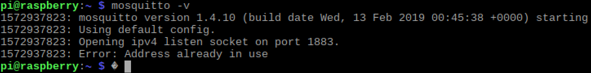

MQTT
In this lab, we learn how to use a publish-subscribe protocol to send data between devices. In particular, we will be using the Paho-mqtt library for Python and MQTT.fx to connect the two Raspberry Pis to each other, and to a laptop.
Before we start, just as a repetition, since it’s easy to lose the overview when so many different parts are involved:
- MQTT is the publish-subscribe protocol that we are using today.
- Mosquitto is the software to run your own MQTT broker.
- Paho-mqtt is a library for Pyhton to run an MQTT client, which connects to a broker, and can publish messages and subscribe to topics.
- MQTT.fx is a helping program to manually publish messages and subscribe to topics.
For the Report: Before we used HTTP. Describe in a few words the difference of MQTT and HTTP. Do you see situations where each of them has their strengths? When would you use which protocols?
MQTT.fx
The goal in this exercise is to get familiar with MQTT.fx. You should get so familiar with it that you can “trust it”, in the sense that you know what is going on in a system under construction, and can use MQTT.fx to figure out situations.
Installation and Connection
Install MQTT.FX on your own laptop. Ideally, install it on more than one laptop, so you can send messages between them.
Subscribing
- Connect to an open broker, one listed on this list. (Not all are up and running at all times. Last I used
test.mosquitto.org.)
- Subscribe to the topic
/# and watch what happens. (Not all brokers allow you to do that.)
- Try to catch some of the payloads that are transported, and some of the topics that are used.
- Unsubscribe from the topic
/# again and instead subscribe to a specific topic that you have observed in the trace.
- Figure out if there is any meaning in the messages.
Tip: You can also use the Topics Collector in the lower left corner of the Subscribe Tab in MQTT.fx. With that function, you can list all the topics that are currently used on the broker.
Publish and Subscribe
Now let’s communicate, only by using MQTT.fx.
- Find another team.
- Agree together on a (unique) topic that you want to use.
- make sure you are connected to the same broker.
- Use this topic to send messages back and forth using MQTT.FX, like in a chat.
Starting Your Own MQTT Broker
Goal: Install your own broker on a Raspberry Pi, and use MQTT.fx to verify that all is setup correct. Send some messages back and forth.
Install Mosquitto on the Raspberry Pi
Install Mosquitto using apt. (We first update apt’s index, then install Mosquitto.)
Testing Your Broker
Start Mosquitto:
The result should look like this:

You can also check which ports it is connected to:
For the report: Document this output.
Playing with Mosquitto
Tasks:
- Find which IP address your Pi has, you need this when connecting to your broker.
- Use MQTT.fx (on your laptop) and connect to the Raspberry Pi. Use the IP address of the Pi, and usually Port 1883.
- Use MQTT.fx on another laptop, and also connect to the broker.
- Send messages from laptop to laptop via the broker. (Select any topic you want.)
For the Report:
- Show a sequence diagram of a message exchange between laptop 1, broker, laptop 2 when you send a few messages back and forth.
- Include a screenshot of MQTT.fx.
MQTT in Python
Goal: You can publish a message to an MQTT broker from Python, and you can subscribe to an MQTT topic from Python.
Tips:
- Use the MQTT broker that you just installed on the Raspberry Pi.
- You can work with Python on the same Pi that runs the broker, or use the other one. (We will later connect both Pis, so it does not matter on which of them the broker runs.)
Installing MQTT Paho Clients for Python
Install the Python poackage for MQTT clients:
pip3 install paho-mqtt
Documentation for the Paho clients is here:
Tasks:
- Install Paho MQTT on the Pi. This is a Python library for an MQTT client that can connect to the broker.
- https://pypi.python.org/pypi/paho-mqtt/
- Write a simple Python program that subscribes to a topic, and prints out whatever you sent as payload in your message.
- Send something to the chosen topic from your laptop using MQTT.fx. Can you see the output in your Python program?
- Write another simple Python program that publishes a message with some payload to a topic.
- Subscribe with MQTT.fx on your laptop to that topic and check if you can receive the message sent via Python.
For the Report:
- Include the (few) lines to publish a message and to subscribe to a topic, and document your work, also using some screenshots of MQTT.fx.
Back to the Sense HAT
Goal: Create a program on the Sense HAT that uses the joystick and the LED. We will use this program later for some remote communication.
Tips:
- Have a look at the example programs
- Run some of them, and try to understand how they work
- Can you build a simple program that just moves a pixel on the LED matrix?
Remote Control of the Sense HAT
Goal: You can remotely control the moving Pixel of the Pi of another team with the joystick on your Pi, and the other team can control the pixel on your screen with their joystick.
Tips:
- Use different topics for up, down, left, right. (In this way, you can ignore any payload of the message.)
- Use the joystick to send these commands as MQTT messages to different topics.
- Let the pixel be controlled by subscribing to the corresponding topics.
- Make first a version that runs with your MQTT broker, and which control your pixel with your joystick, simply by publishing and subscribing to the corresponding topics.
- Use MQTT.fx for testing, either by sending messages that should move the pixel, or by checking that the joystick triggers the correct messages.
- Agree with another team which topics to use. You can use a single MQTT broker, of either team
Final Steps
Learning Goals
Reflect about what you learned today. Write a few sentences that capture (in your own words) what you learned and why it can be useful. Share these few sentences with everyone in the team. (You should use this text in the individual reflection below.)
Individual Reflection
Fill out the individual reflection survey.
Cleaning Up
- Put all hardware back into the box.
- Store the box in one of the lockers in the lab, using the combination lock.
- Connect all parts of the PC back to it (keyboard, mouse, monitor).
- Take out any trash. (Even if its not yours… thank you!)
- Put the chairs back to the table.
Individual Exercises
We recommend that you take some time to consider if there are any parts of this unit that you want to repeat individually, at your own pace. If you decide to do so, you have several options:
- You have access to the hardware box at all times from the lockers. Just make sure everyone in your team knows where the box is, and put it back into the locker.
- Install a Raspberry Pi Image on a Virtual Box in your PC. With this, you always have a Raspberry Pi with you.
- Some of the Linux-related exercises also work on the Linux-PCs in the lab.